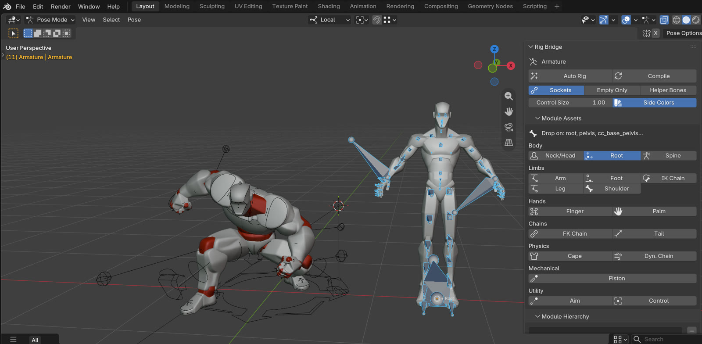
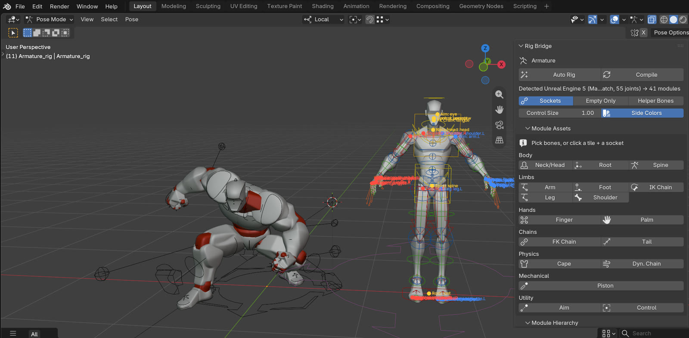
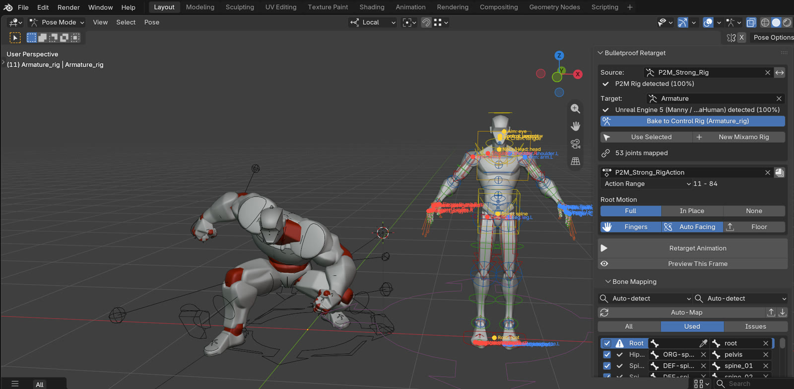
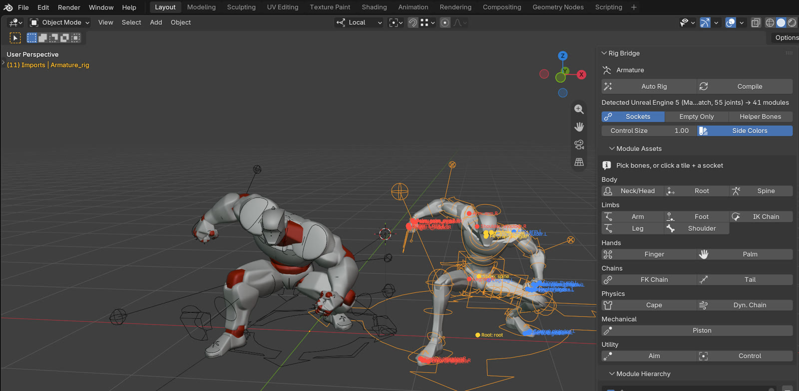

One-click control rigs
for any game skeleton.
A free Blender add-on modelled on Unreal Engine's Modular Control Rig. Import a Mixamo, Unreal, Daz or Character Creator character and click Compile. You get an animator-friendly FK/IK rig that drives the original bones and leaves them unchanged, so the result still exports to the engine.
One P2M animation, played by five imported FBX characters: two Mixamo, AccuRIG, Character Creator and Unreal Engine 5. Each is driven only by its own Rig Bridge control rig.
Import, Compile, Retarget
That's the whole workflow. Rig Bridge does the rigging. The separate Bulletproof Retarget add-on does the retargeting and bakes the result straight onto the rig's controls.

1Import
File ▸ Import ▸ FBX. Sockets appear on the skeleton, each showing the module it suggests.

2Compile
The skeleton standard is detected (here Unreal Engine 5, 100%, 41 modules), then the rig is placed and built in a few seconds.

3Retarget
Pick the character or its rig as Target and click Retarget Animation. Both FK and IK controls are keyed on every frame.

After step 3, the UE5 character's control rig carries the P2M animation: keys on Armature_rig, with the IK/FK switch working anywhere in the clip.
20 skeleton standards, recognised automatically
The skeleton definitions are the same ones Bulletproof Retarget uses, so both add-ons agree on what a skeleton is. Anything unknown falls back to topology detection, and you can save your own profiles as JSON. Existing control rigs (P2M, generated Rigify, Auto-Rig Pro) are recognised and left alone.
Modular, like Unreal's Modular Control Rig
Modules snap onto sockets. Their connectors fill themselves in: the leg finds its toe, the piston its rod, the eyes their pair. Mirror, duplicate, remove, then Compile again at any time. The rig is rebuilt in place and keeps its animation.
Body (Rigify backend)
- Spine, Neck/Head, Root: exact on multi-bone necks (UE5, CC, Daz)
- Arm, Leg: IK/FK with foot roll; IK stretch is off by default so game bone lengths are kept
- Shoulder, Finger, Palm, FK Bone, Tentacle
- Twist and corrective bones are driven the way Unreal drives them
Secondary & mechanical (native)
- Tail: curl master, harmonic wave, optional dynamics
- Dyn. Chain: hair, ponytails, antennae
- Cape: chains simulated as cloth, with colliders
- Piston, Aim (eyes follow the head), IK / FK Chain, Control
- Custom modules in Python, detection profiles in JSON
Bake to Control Rig
Any skeleton animation (mocap, a retarget, an FBX clip) becomes keys on the controls: FK arms + IK legs, full IK or full FK, with exact IK poles on every frame.Bake to Skeleton
Back to plain bone keys, for FBX export to Unreal or Unity or as a retarget source. The original skeleton was never modified.Tested on real characters
Each test retargets an animation through the control rig, then removes the skeleton's own animation, so only the rig moves it. The result is compared with a plain retarget onto an unrigged copy.
| Character (FBX) | Detected as | Modules | Clicks | Max. error |
|---|---|---|---|---|
| Ch36_nonPBR | Mixamo | 18 | 3 | 0.03 cm · 0.000° |
| Dancing | Mixamo | 18 | 3 | 0.10 cm · 0.000° |
| Regular_MB_Build | AccuRIG (MotionBuilder) | 33 | 3 | 0.10 cm · 0.000° |
| Regular_Rigify_Rig | Character Creator / ActorCore | 33 | 3 | 0.10 cm · 0.000° |
| Regular_UE5_Rig | Unreal Engine 5 | 41 | 3 | 0.09 cm · 0.000° |
There are also automated suites: 39/39 detection and transfer checks, 52/52 checks on the modular examples scene, and 142/142 checks across all 20 standards in three bake modes.
One CC export with UE, AccuRIG and CC_Base bone names, so three skeletons, each with its own control rig: 22/22 checks.
A UE5 skeleton (118 bones) with 41 modules, including twist bones, IK bones, eyes, jaw and tongue.
Install
Rig Bridge
- Download
rig_bridge-x.y.z.zipfrom Releases - Drag it into Blender 4.2+ (tested on 5.2.3)
- 3D View ▸ Sidebar (N) ▸ Rig Bridge. Rigify is enabled automatically.
Bulletproof Retarget (optional)
- For one-click retargeting onto the rig: 1.3.2 or newer
- The two are separate add-ons, and neither requires the other
- With another retargeter, use Release Skeleton, retarget, then Bake to Control Rig